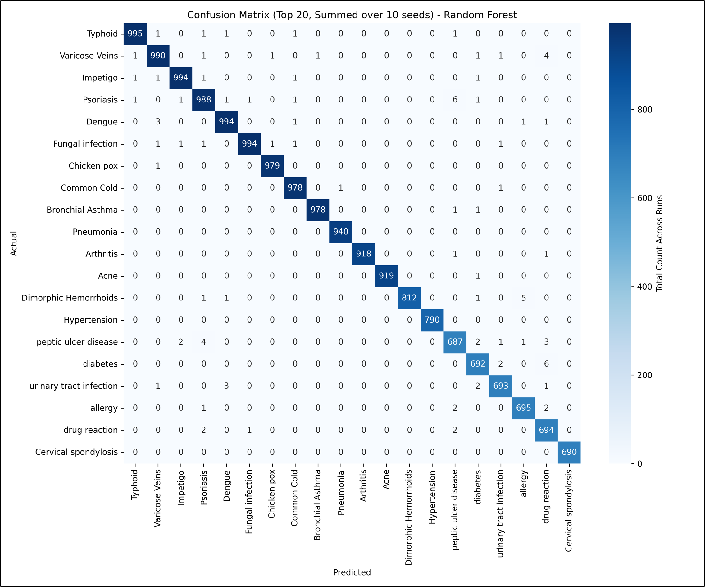

Disease Prediction
Multi-model ML pipeline achieving ≥99% accuracy on disease prediction from textual symptom data with NLP preprocessing and rigorous cross-validation.
Machine Learning
NLP
Classification
Data Science
View the results ↓
≥99%
Classification Accuracy
3
Models Benchmarked
10
Validation Seeds

Project Overview
This project builds and rigorously benchmarks machine learning models for predicting diseases from textual symptom descriptions. The goal was to compare classical ML approaches on a structured NLP pipeline and establish clear evidence of which architecture performs best, and why.
Approach
- Preprocessed raw symptom text using NLTK — tokenization, stopword removal, stemming — and encoded features via TF-IDF vectorization to capture symptom co-occurrence patterns.
- Trained and compared three classifiers: Random Forest, Support Vector Machine (SVM), and Multi-Layer Perceptron (MLP) — each tuned via grid search on held-out validation sets.
- Applied stratified k-fold cross-validation with 10 random seeds to ensure results were statistically robust and not artifacts of a single split.
- Analyzed performance using confusion matrices, per-class precision/recall, and F1 scores — surfacing exactly which diseases each model struggled with.
- Achieved ≥99% accuracy across all three models, with Random Forest showing the best interpretability via feature importance rankings.
Key Findings
- All three classifiers converged to near-identical top-line accuracy, confirming the data was linearly separable after TF-IDF transformation — an interesting result that motivated ablation experiments removing preprocessing steps.
- The few misclassifications were concentrated in symptom overlap zones (e.g. flu vs. common cold), which informed potential improvements through hierarchical classification.
- Random Forest's feature importances revealed the top 15 discriminating symptoms per disease class, providing clinically interpretable model insights.
Tech Stack

Model comparison
Random Forest≥99%
SVM≥99%
MLP≥99%